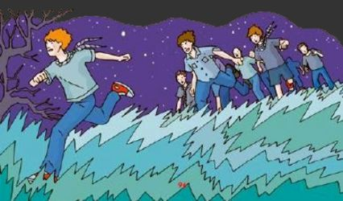

La Patrulla
El principal objetivo de la Patrulla, es que cada uno de sus miembros cumpla verdaderamente con su responsabilidad. Esto quiere decir que, aun cuando el o la Guía conduce a todos los integrantes de la patrulla como un equipo, sólo si cada uno comprenden de verdad que tienen una tarea definida e importante con respecto al bienestar general, la Patrulla funcionará adecuadamente, y tendrá más oportunidades de ganar.
Es importante también que el o la Guía de Patrulla asuma este reto con determinación... No será fácil, deberán competir todo el tiempo con otras patrulla decididas a ganar, por eso nuestra recomendación inicial, es que si sufren algún fracaso no se rindan de una vez, recuerden que el ganador no se define sino hasta el final de la Competencia.
¡Buena Suerte para Todos!
¿Qué se evaluará en cada Patrulla?
Cantidad de Patrulleros
Se estableció un mínimo de 6 y un maximo de 9 patrulleros por cada Patrulla.
Estas además deben ser patrullas naturales, es decir que hagan vida de forma habitual en sus Tropas de origen, y NO que se hayan formado de manera especial para el evento.
Nota: En caso de no contar con el mínimo, o sobrepasar el máximo establecido, la patrulla deberá notificar esto el Jefe de Subcampo Tropa, para que el caso sea considerado.
Uniformidad
Los patrulleros deberán estar presentables en todo momento, tanto cuando usen el uniforme, como cuando estén de faena. Así mismo será tomado en cuenta el "Equipo de Siempre Listo" y el uso del Bordón, por parte de todos y cada uno de los Scouts.
No habrá penalización para quien no tenga la camisa verde, siempre y cuando use en su lugar una prenda unicolor (esto en consideración a la situación general del País); pero si será tomado en consideración, la vestimenta sucia o rota, la falta de higiene personal, y así todos los elementos que tienen que ver con la buena presencia del Scout.
Orden y Espíritu Scout
La Patrulla deberá mostrarse obediente y disciplinada, tanto con los Scouters como con sus Guías de Patrulla. Así mismo deberán demostrar en todo momento ánimo y buen humor, manifestándolo seguidamente con sus Gritos de Patrulla y canciones Scouts.